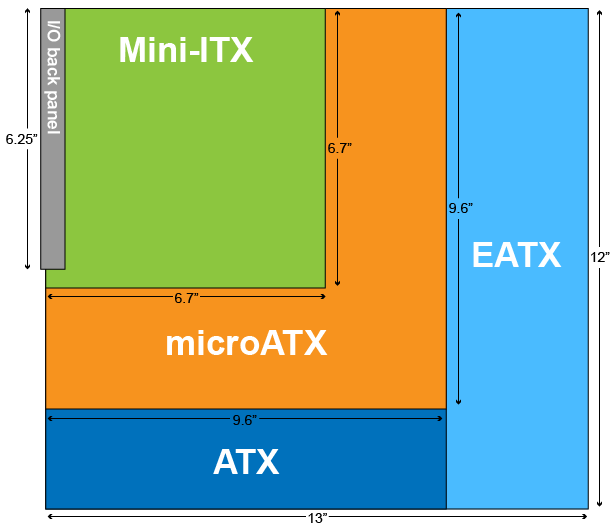

Cases and Form Factors
Cases and Form Factor Facts
Motherboard form factor standards help ensure that computer components can be interchangeable among vendors and generations of technology. Knowledge of the form factors are important when you customize and upgrade systems.
This lesson covers the following topics:
- Motherboard form factors
- Common motherboard form factors
- Common computer cases
- Computer case components
Motherboard Form Factors
Motherboards adhere to design specifications called form factors. The form factor determines the physical characteristics of a motherboard including:
- Dimensions
- Power supply type
- Mounting hole locations
- Number of expansion slots
- Back panel
- Dimensions
- Arrangement
- Orientation
Common Motherboard Form Factors
Form factors evolve slowly in response to the changing demands of the computer market. The following graphic and table describe the characteristics of the most common motherboard form factors.
Form Factors
Advanced Technology Extended (ATX)
- Description & Function: The most common motherboard form factor with multiple versions. Standardized size and slot locations ensure compatibility with most cases.
- Troubleshooting: Ensure proper mounting and power connections; check for correct expansion slot spacing.
Standard ATX
- Size: 12" × 9.6"
- Function: Base design for all ATX versions, supports up to seven expansion slots.
- Troubleshooting: Verify all mounting holes align with the case.
Extended ATX (EATX)
- Size: 12" × 13"
- Function: The Larger ATX version allows for additional memory slots.
- Troubleshooting: Ensure the case supports EATX before installation.
microATX
- Size: 9.6" × 9.6"
- Function: Smaller ATX version with fewer expansion slots (4 max).
- Troubleshooting: Check case compatibility, especially for expansion slots.
Information Technology Extended (ITX)
- Function: Designed for small form factor (SFF) and low-power computers.
Mini-ITX
- Size: 6.7" × 6.7"
- Function: Compact motherboard, typically for home theater PCs (HTPCs).
- Troubleshooting: Limited expansion slots; ensure compatibility with case and power supply.
Other ITX Versions
- Nano-ITX (4.7" × 4.7"), Pico-ITX (3.9" × 2.85"), Mobile-ITX (2.9" × 1.7")—Even smaller designs for specialized devices.
New Low Profile Extended (NLX)
- Function: Older form factor for slim desktops with a detachable riser card for expansion slots.
- Troubleshooting: Limited availability; often replaced by microATX and Mini-ITX.
Balanced Technology eXtended
- Function: Designed to improve airflow and cooling, but not widely adopted.
- Troubleshooting: Reverse orientation from ATX may cause case compatibility issues.
Common Computer Cases
ATX Full-Tower
- Function: Largest case type, allowing for multiple components and expansions.
- Compatible with: ATX, EATX, microATX.
- Troubleshooting: Ensure sufficient cooling for high-end builds.
ATX Mid-Tower
- Function: Smaller than full-tower with fewer drive bays.
- Compatible with: ATX, microATX, Mini-ITX, some EATX.
- Troubleshooting: Check clearance for larger graphics cards.
microATX Tower
- Function: Compact desktop case with limited expansion.
- Compatible with: microATX, Mini-ITX.
- Troubleshooting: Verify space for cooling solutions.
Mini-ITX Tower
- Function: Designed for Mini-ITX motherboards, smaller than microATX towers.
- Troubleshooting: Limited space for upgrades; ensure airflow is adequate.
HTPC (Home Theater PC) Case
- Function: Designed for media use, typically compact.
- Compatible with: microATX, Mini-ITX.
- Troubleshooting: Ensure proper cooling in tight spaces.
Notebook Case
- Function: Proprietary design varying by model.
- Troubleshooting: Parts may not be interchangeable; check manufacturer specifications.
Computer Case Components
- Includes: Case, power supply (optional), case fans, mounting hardware, external connectors (USB, audio, etc.).
- Troubleshooting: Ensure power supply wattage is sufficient and airflow is optimized for cooling.